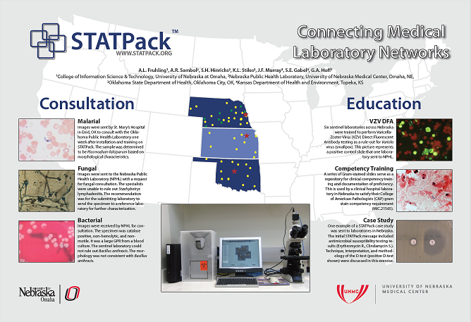
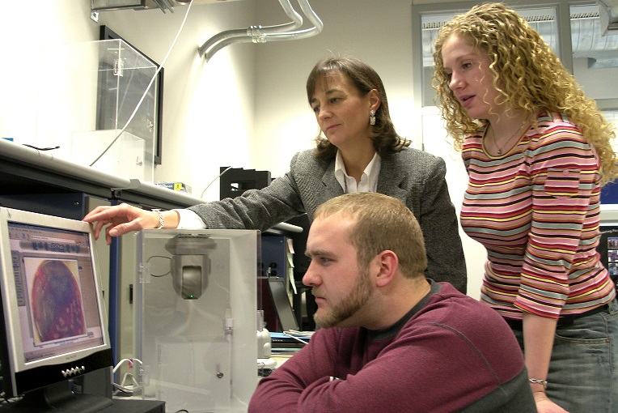

STATPack™
Dr. Ann Fruhling, Director of the School of Interdisciplinary Informatics, has been working with the Nebraska Public Health Laboratory (NPHL) on a project to help laboratories become more prepared for a bioterrorism event. The project, which is funded by a Nebraska Research Initiative (NRI) grant, aims to develop a laboratory-based Secure Telecommunications Application Terminal Package, termed "STATPack". The goal of the NRI program is to leverage Nebraska resources to develop new technologies that may have commercial potential.
STATPack™ is a secure, dedicated, HIPAA-compliant web-based network system that supports telecommunications between clinical laboratories in Nebraska, Kansas, and Oklahoma. In the initial phase of field implementation, the STATPack™ was be placed in regional hospital laboratories throughout Nebraska. This connectivity allows for immediate communication and data transfer of urgent test related problems by transmitting images and text. This system serves as a means for providing immediate consultation with the NPHL, KDHE, & OSDH. For example, an "unknown" organism growing from a culture that a laboratory may be processing or a "suspicious" package delivered to the laboratory may need to be analyzed. The need for such a system became apparent during the anthrax scare in 2002 when laboratorians wanted immediate answers to questions concerning processing unusual organisms.
The STATPack™ system consists of a computer terminal and a high resolution digital camera by which pictures of culture plates may be taken. These images and descriptive text messages may be sent to the NPHL for consultation. NPHL will receive a notice that a laboratory is requesting consultation via a pager and through the system. Should a message need to be communicated to the laboratories, the STATPack™ system allows the NPHL to send notices to laboratories including an audible computer alarm.
There are several new developments on the horizen for the STATPack™ system. A future version of the STATPack™ is planned that will allow laboratories to capture microscopic images of Gram or Fluorescent Antibody (FA) stains and send these images to a consultant. A hardware-independent version of STATPack™, dubbed STATPack™ Lite, will reduce cost and increase convenience while simplifying maintenance. Miniaturized solutions are also being explored, including a version of STATPack™ designed to run on a Raspberry Pi. To improve safety and visibility, efforts are being made to enable the STATPack™ to run securely and wirelessly from within enclosed specimen cases.
For more information, please view www.statpack.org and UNO Alumni Article
Contact
Ann L. Fruhling, PhD, MBA
Professor
Director, School of Interdisciplinary Informatics
College of Information Science and Technology
University of Nebraska at Omaha
PKI 280A
(402)554-4968
afruhling@unomaha.edu

Comments

"Don't dream your life, live your dreams."